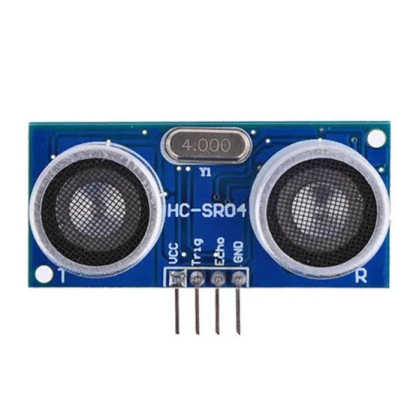
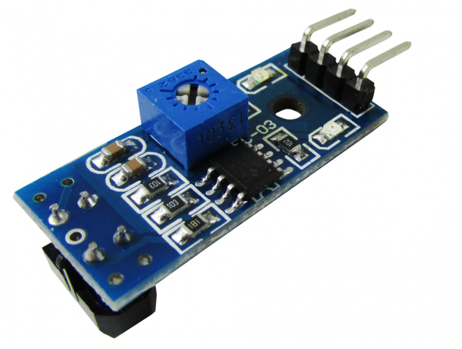
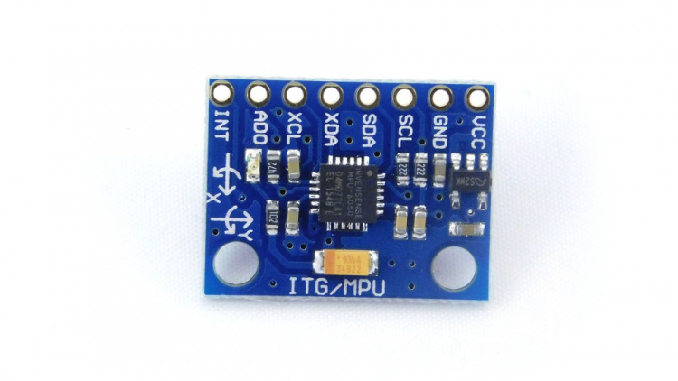
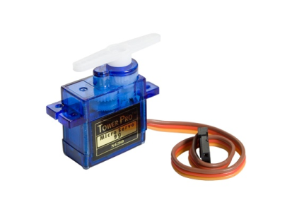
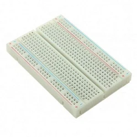
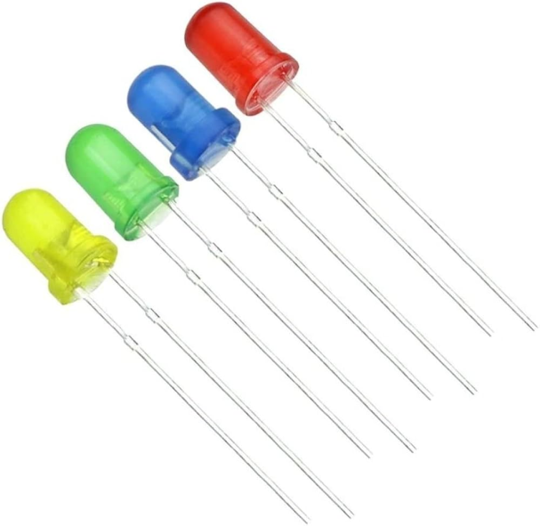

Aula 1
Componentes: Componentes de robótica englobam controladores (Arduino, Raspberry Pi), sensores (ultrassônico, luz), atuadores (motores, servos), fontes de energia (baterias), e estruturas mecânicas.
Sua função: Eles permitem automação e controle, sendo essenciais para montar robôs funcionais que interagem com o ambiente
Sensor de Distância Ultrassônica
Este sensor mede a distância até um objeto utilizando ondas sonoras. Ele emite um pulso ultrassônico e calcula o tempo que o som leva para voltar, determinando assim a distância.

*imagem do sensor.
Sensor IR (Infravermelho)

O sensor infravermelho detecta a presença de objetos ou obstáculos através da emissão e recepção de luz infravermelha. É muito usado para detectar movimento ou proximidade.
Acelerômetro

O acelerômetro mede a aceleração de um objeto em diferentes eixos (X, Y e Z). Ele pode identificar movimento, inclinação e vibração.
Servomotor

O servomotor é um motor que permite controle preciso de posição angular. Ele é muito usado em projetos que exigem movimentos controlados, como braços robóticos.
Protoboard

A protoboard é uma placa usada para montar circuitos eletrônicos sem necessidade de solda. Ela facilita testes e prototipagem de projetos.
LED

O LED (diodo emissor de luz) é um componente eletrônico que emite luz quando uma corrente elétrica passa por ele. É utilizado para sinalização e iluminação.
Sensores
| Tensão | Saída (m) | VOLTS (s) | Polaridade (m/s) | |
|---|---|---|---|---|
| 5T | 2.0 | 4.2V | - | |
| 10T | 3.0 | 4.5V | + | |
| 15T | 2.0 | 5.5V | - |
* Apenas valores ilustrativos.